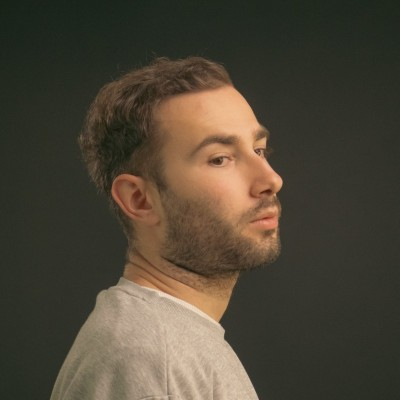

Nazım Kahramantürk
Producer

Nazım Kahramantürk is a producer, filmmaker and editor. As a co-founder of the 'ardiyé' collective art space, his practice focuses on raw cinematography.
Currently continuing his studies at Dokuz Eylül University's Fine Arts Faculty in Film Design and Direction. This theoretical foundation informs his contemporary installations, exploring how digital speed fractures spatial reality.